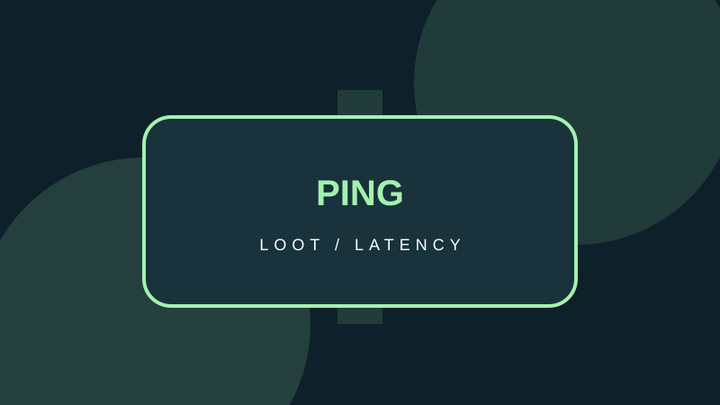

Check Wi-Fi signal, packet loss and routing before buying expensive equipment.
Start by testing your connection
Use a wired Ethernet connection if possible. For phones, move nearer the Wi-Fi router and use a less crowded frequency band. Compare tests at similar times.
Understand latency, jitter and packet loss
Ping is the time it takes a packet to reach a server and return. Jitter is how much that time fluctuates. Packet loss can cause rubber-banding even when average ping looks fine.
Choose your server and limit traffic
When your game offers a server choice, pick a nearby region with a stable connection. Pause large downloads and cloud backups during competitive matches.
When to contact your ISP
If the issue happens across devices and games, save consistent test results and ask your internet provider to examine the line. A VPN or gaming optimizer cannot guarantee lower ping.
Final takeaway
Start with one small change, check whether it works for you, and build on what you learn. Gaming should remain enjoyable and within your budget.